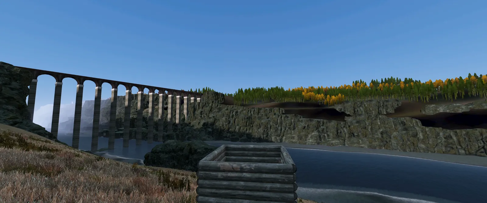

ASHWRIGHT
Ein DayZ-Server ohne NPC-Händler. Du baust Erz ab, schmilzt es im Ofen, den du selbst gemauert hast, schmiedest dein Werkzeug und handelst mit anderen Spielern. Allein geht das auch.
Kein Erz spawnt zufällig
Jedes Vorkommen liegt da, wo es geologisch hingehört, berechnet aus den echten Kartendaten: Gestein, Gelände, Wasser und Hang. Erz wächst in Echtzeit nach, und deine Hacke entscheidet, was du abbauen kannst. Ist sie zu weich, prallt sie ab.
Mehr zu Erzen
Erz rein, Kohle drauf, Blasebalg
Der Ofen schmilzt erst, wenn er heiß genug ist. Die Holzkohle brennst du im Meiler, den Lehmofen mauerst du selbst. Aus Kupfer und Zinn wird Bronze, und mit Bronze-Werkzeug kommst du an das Eisen.
Mehr zum Schmelzen
14 Berufe, fünf Güteklassen
Jede Ader hat eine Güte, und die steckt später im Barren und im Werkzeug. Wie gut etwas wird, hängt am Erz und an der Erfahrung dessen, der es herstellt. Da wird nichts ausgewürfelt.
Mehr zu den BerufenDie fünf Güteklassen
- Unreinhäufig
- Solide
- Rein
- Hochrein
- Makellosselten

Kein Händler, kein Startgeld
Alles, was es gibt, hat ein Spieler hergestellt. Wer sich auf einen Beruf spezialisiert, verkauft an andere. Wer lieber allein spielt, kommt auch durch: Handel spart Zeit, mehr nicht. Außerhalb der Monuments gilt: erst reden, dann schießen.
Mehr zu Handel und PvP
Aus dem Spiel
Aufnahmen aus dem Spiel und Renders der selbst gebauten Modelle. Über 200 davon sind fertig.


Wer willst du sein
Jede Arbeit bringt Erfahrung in ihrem Beruf. Du kannst alles lernen, aber alles zu beherrschen kostet sehr viel Zeit.
Rohstoffe
Bergbau
Erz abbauen, mit mehr Ausbeute je Stufe.
Prospektion
Vorkommen finden und einschätzen.
Forst & Harz
Bäume fällen, Holz spalten, Harz sammeln.
Jagd & Gerben
Fell, Leder, Sehnen und Fleisch.
Veredeln
Hüttenwesen
Erz im Ofen zu Barren schmelzen.
Keramik & Glas
Tiegel, Gussformen, Ziegel.
Labor
Schwefel, Salpeter und andere Grundstoffe.
Landwirtschaft
Beete anlegen, ernten, Vorräte anlegen.
Münzer
Prägt die Münzen, mit denen gehandelt wird.
Herstellen
Schmieden
Werkzeug am Amboss, per Minispiel.
Büchsenmacher
Waffen aus Einzelteilen.
Mechanik
Motoren und Fahrzeuge.
Bauen
Hütten, Häuser, Mauern.
Draußen
Überleben
Feuer machen, Behelfswerkzeug, die ersten Tage.
Fertigkeiten
Kondition, Schleichen, Fernkampf, Nahkampf, Erste Hilfe: werden durch Übung besser.
Server unterstützen
Die Mod ist kostenlos. Wer uns helfen will, kann Pakete kaufen, die nichts am Spiel ändern. Der Verkauf startet, sobald die Abstimmung mit Bohemia Interactive durch ist.
Reservierter Platz
Dein Platz in Saison 0 ist sicher, auch wenn die Wellen voll sind. Du startest am selben Tag wie alle in deiner Welle.
Supporter
Discord-Rolle, Namensplakette im Chat und ein Platz auf der Credits-Wand.
Skins
Kleidung, Waffen-Finish, Basen-Banner, dein eigenes Meisterzeichen. Nur Optik, die Werte bleiben gleich.
Warteschlange
Bei vollem Server zuerst rein. Gibt es nur, wenn Bohemia es freigibt.
Das gilt immer
- Alles Bezahlte ist Optik, Anerkennung oder Komfort beim Einloggen.
- Ohne Kauf verpasst du im Spiel nichts.
Das kaufst du nie
- Waffen, Munition, Fahrzeuge, Materialien, Münzen
- Erfahrungs-Boost, Rezepte, größere Basen
Whitelist
Zum Start lassen wir nur angemeldete Spieler auf den Server, in Wellen. Wir sind zu zweit und wollen am ersten Abend jedem helfen können, statt im Chaos unterzugehen.
Deutsch und Englisch auf dem Server. Sichere Plätze gibt es in der Shop-Vorschau.
- Discord beitretenDu brauchst nur einen Discord-Account.
- Regeln lesenEs sind sieben.
- AnmeldenIm Kanal „whitelist“ auf Anmelden klicken und die Steam64-ID eintragen (17 Ziffern, steht auf steamid.io).
Fragen
Wann startet Saison 0?
Sobald der Termin feststeht, steht er im Discord unter Ankündigungen. Wer den Ping dafür aktiviert, verpasst ihn nicht.
Was kostet die Mod?
Nichts. Zur Unterstützung wird es freiwillige Pakete geben, die nichts am Spiel ändern. Sie sind in der Shop-Vorschau beschrieben.
Kann ich allein spielen?
Ja. Jede Kette lässt sich solo durchspielen. In der Gruppe geht es nur schneller.
Gibt es Händler oder Startgeld?
Nein. Alles, was es gibt, hat ein Spieler hergestellt. Gehandelt wird unter Spielern.
Brauche ich die Whitelist?
Ja, zum Start. Anmelden kannst du dich im Discord.
Läuft das auf PlayStation oder Xbox?
Leider nein. DayZ-Mods gibt es nur auf dem PC.